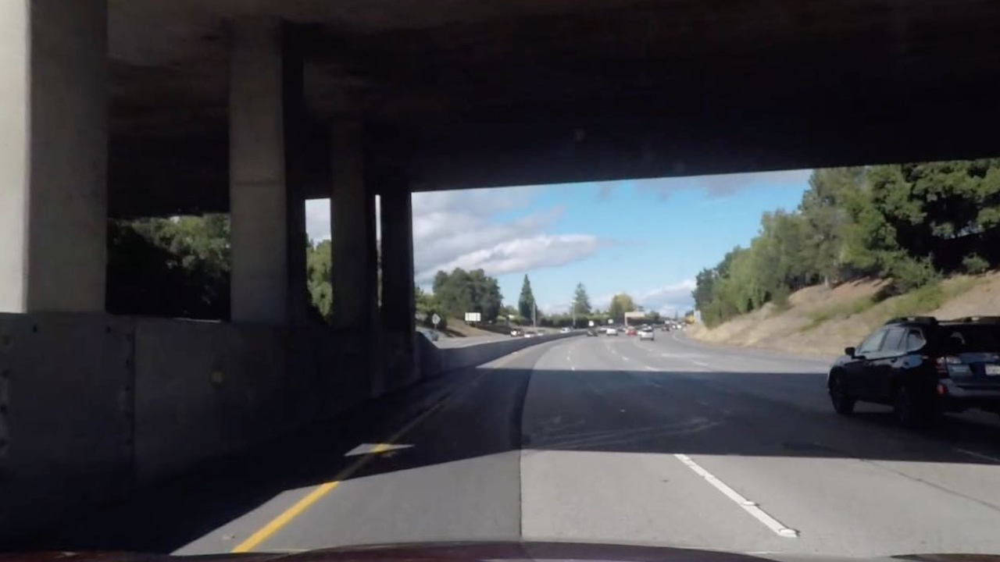
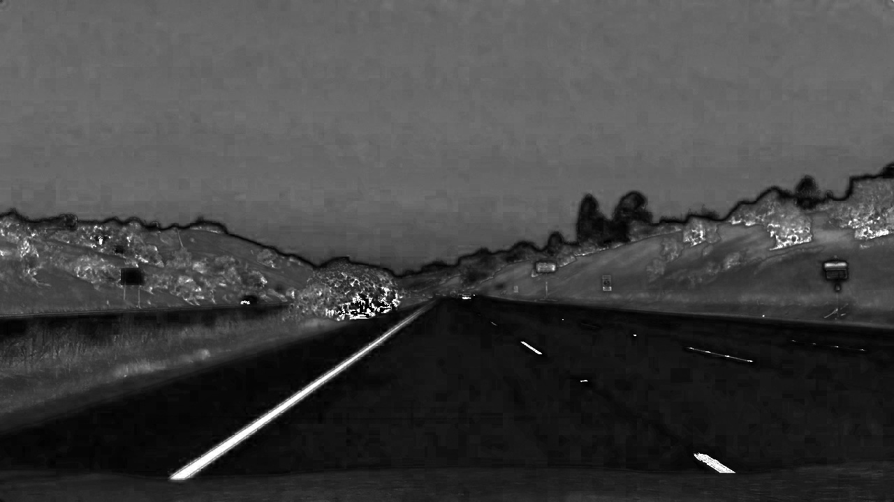

Advanced Lane Finding Project
Programming Language:
- Python
The goals of this project are the following:
- Compute the camera calibration matrix and distortion coefficients given a set of chessboard images.
- Apply a distortion correction to raw images.
- Use color transforms, gradients, etc., to create a thresholded binary image.
- Apply a perspective transform to rectify binary image (“birds-eye view”).
- Detect lane pixels and fit to find the lane boundary.
- Determine the curvature of the lane and vehicle position with respect to center.
- Warp the detected lane boundaries back onto the original image.
- Output visual display of the lane boundaries and numerical estimation of lane curvature and vehicle position.
A. Pipeline.
My pipline consists of 7 steps as follows:
- Step 1: Camera Calibration
- Step 2: Distortion correction
- Step 3: Detect lines based on color and gradient
- Step 4: Perspective transform
- Step 5: Detect lane lines
- Step 6: Determine the lane curvature
- Step 7: Determine vehicle offset from center
B. Visualized Results
1. Camera calibration and Distortion correction: Image distortion occurs when a camera looks at 3D objects in the real world and transforms them into a 2D image; this transformation isn’t perfect. Distortion changes what the shape and size of these 3D objects appear to be. The following is a sample of the processed results:
| Input image | After Calibration |
|  |
One can see that the lines on the left side of the image become straight after distortion.
2: Detect lines based on color and gradient: Detect lines of the current lane based on color and gradient.
- I first convert the image from RGB color space to HLS color space. The following shows the HLS color space.
| H channel | L channel | S channel |
 |
 |
- Then, I do color selection on S channel and x gradient on L channel. The following shows the combined result:
| Input Imgae | Color_Gradient Result |
- After that, I do open operation on the previous result to remove noise. One can see that the tiny noise is remove.
| Input Imgae | Open Operation |
4. Perspective transform: To detect lines, I convert the image to birdeye view. I chose the following source and destination points:
| Source Points | Destination Points |
| 200, 200 | 566, 470 |
| 980, 200 | 714, 470 |
| 980, 700 | 1055, 680 |
| 200, 700 | 253, 680 |
The following shows a sample. It is clear that two lines are parallel.
| Input Imgae | Open Operation |
5. Detect lane lines:
- First, I calculate histogram on vertical direction.
| Input Imgae | Histogram |
- Then, I detect lines and compute their polynomial functions.
| Input Imgae | Detect Lines |
6. Visualize final result:
| Input Imgae | Detect Lines |
Potential improvements
- This pipeline may be not work perfectly if the line is not very clear. Thus, merging the results generated using different color space will improve the performance.
- The perspective transform matrix may be not exactly same for different camera. Thus, we need a smarter way to calculate it automatically.